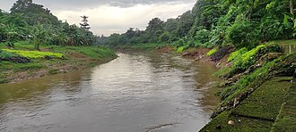

Sejarah

Jakarta bermula dari pelabuhan kecil di estuari sungai Ciliwung sekitar 500 tahun yang lalu. Lambat laun, pelabuhan kecil ini bertransformasi menjadi pusat perdagangan internasional yang mempertemukan ragam bangsa di dunia. Rekam jejak Jakarta bisa ditemukan melalui beberapa prasasti yang ditemukan di sekitar pelabuhan dan sepanjang sungai Ciliwung.
Sejarah tentang Jakarta tercatat oleh para pengembara Eropa di abad ke-16. Kala itu, Jakarta marak disebut sebagai Kalapa, yang merupakan pelabuhan utama kerajaan Sunda. Pelabuhan yang turut menjadi pusat perniagaan Portugis kala itu diserang oleh Pangeran Fatahillah pada 22 Juni 1527. Sejak itu, Pangeran Fatahillah mengganti nama Sunda Kalapa menjadi Jayakarta. Tanggal penyerangan itu hingga kini diperingati sebagai HUT Kota Jakarta.
Geografis

Jakarta berlokasi di sebelah utara Pulau Jawa, di muara Ciliwung, Teluk Jakarta. Seluruh wilayah Jakarta terletak di dataran rendah pada ketinggian rata-rata 8 meter dpl dengan titik tertinggi Jakarta adalah 91 meter dpl berada di Kawasan Buperta Cibubur, Cipayung, Jakarta Timur yang merupakan ujung terendah dari formasi dataran Jonggol-Jatiluhur. Sementara titik terendahnya yaitu -1 meter dpl dengan lokasi di wilayah Muara Baru dan Pluit, Jakarta Utara di mana daerah tersebut mengalami fenomena penurunan tanah sejak lama. Karena berada di dataran rendah, mengakibatkan banyak dari wilayah Jakarta sering dilanda banjir, terlebih sebelah selatan Jakarta merupakan daerah pegunungan dengan curah hujan tinggi. Jakarta dilewati oleh 13 sungai yang semuanya bermuara ke Teluk Jakarta. Sungai yang terpenting ialah Ciliwung, yang membelah kota menjadi dua. Sebelah timur dan selatan Jakarta berbatasan dengan provinsi Jawa Barat dan di sebelah barat berbatasan dengan provinsi Banten.
Kepulauan Seribu adalah kabupaten administratif yang terletak di Teluk Jakarta, seluruh wilayahnya berbentuk gugusan kepulauan, dengan 105 pulau terletak sejauh 45 km (28 mil) sebelah utara Teluk Jakarta.
Wisata
Kepulauan Seribu adalah kabupaten administratif yang terletak di Teluk Jakarta, seluruh wilayahnya berbentuk gugusan kepulauan, dengan 105 pulau terletak sejauh 45 km (28 mil) sebelah utara Teluk Jakarta.
Taman Mini
Kepulauan Seribu adalah kabupaten administratif yang terletak di Teluk Jakarta, seluruh wilayahnya berbentuk gugusan kepulauan, dengan 105 pulau terletak sejauh 45 km (28 mil) sebelah utara Teluk Jakarta. Kepulauan Seribu adalah kabupaten administratif yang terletak di Teluk Jakarta, seluruh wilayahnya berbentuk gugusan kepulauan, dengan 105 pulau terletak sejauh 45 km (28 mil) sebelah utara Teluk Jakarta.
Kota Tua
Tidak Heran, jika suasana Kota Tua Jakarta selalu ramai pada akhir
pekan. Penyebabnya, adalah karena ketersediaan beragam spot yang
cantik bahkan mampu "menunjang" kegiatan selfie anda. Bayangkan,
deretan pertokoan, gedung, hingga rumah - rumah tua menghiasi seluruh
area Kota Tua jakarta. Belum, dengan keberadaan beragam aktrasi
dan kegiatan, seperti halnya pameran seni, nobar (nonton bareng),
pengamen unik dsb.